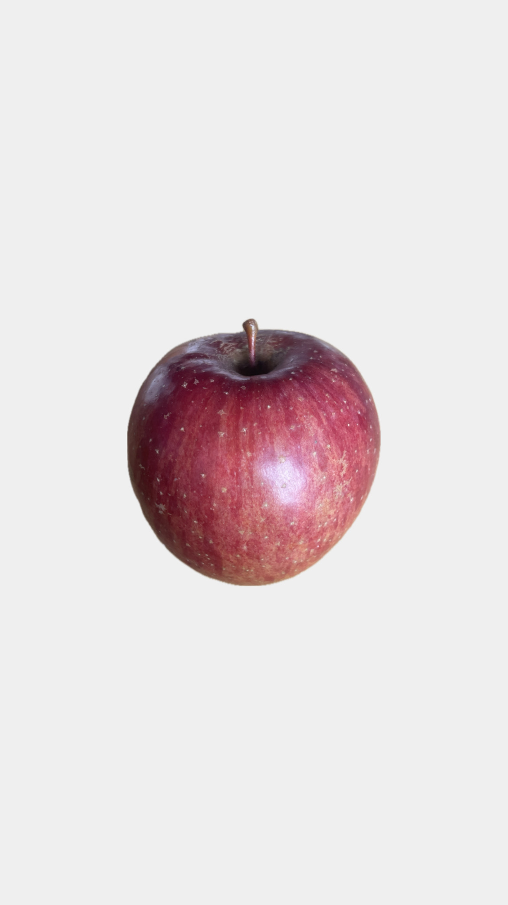
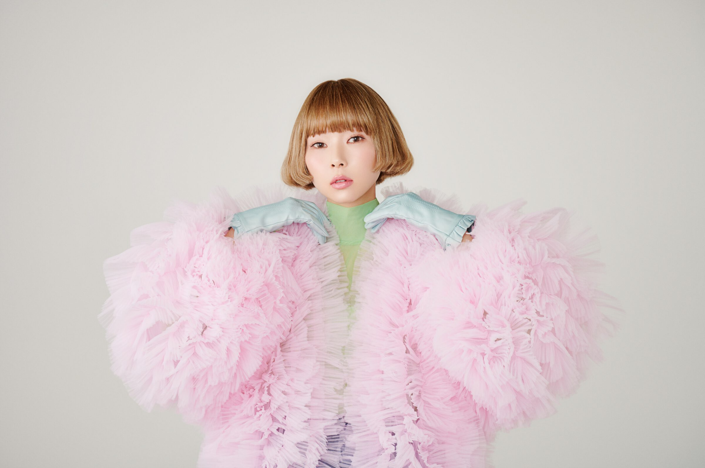
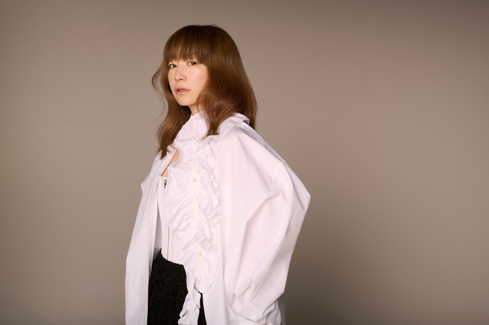
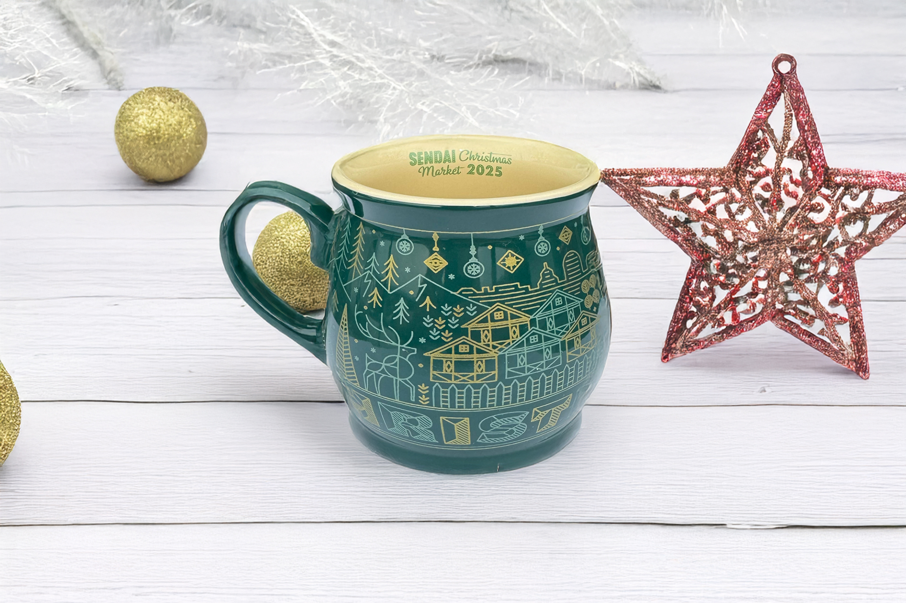

実莉/Minori
私が惹かれるのは、見ているだけで気持ちが明るくなるポップで可愛い世界。
このページでは、私を元気にしてくれるお気に入りを紹介します。
Artist
あさぎーにょ / Asaginto

ネガティブな出来事も面白い話に変える素敵な人
服のブランド「poppy」は、見ているだけでハッピーに🎈
Song
プリズム/YUKI

YUKIの「プリズム」は最近のお気に入り
YUKIの声もかわいくて大好きです♬
Season
Christmas🎄

クリスマスシーズンの心が躍る装飾がかわいい！
仙台クリスマスマーケットが楽しみです⛄